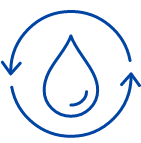
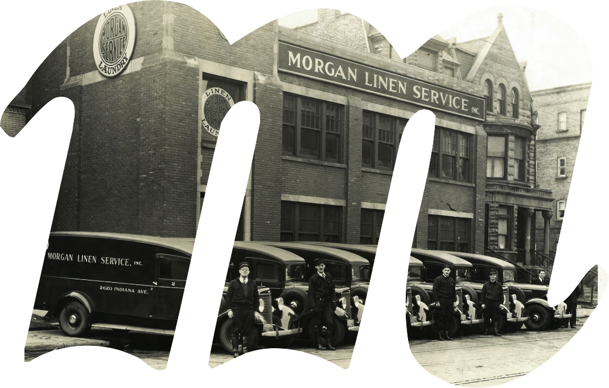
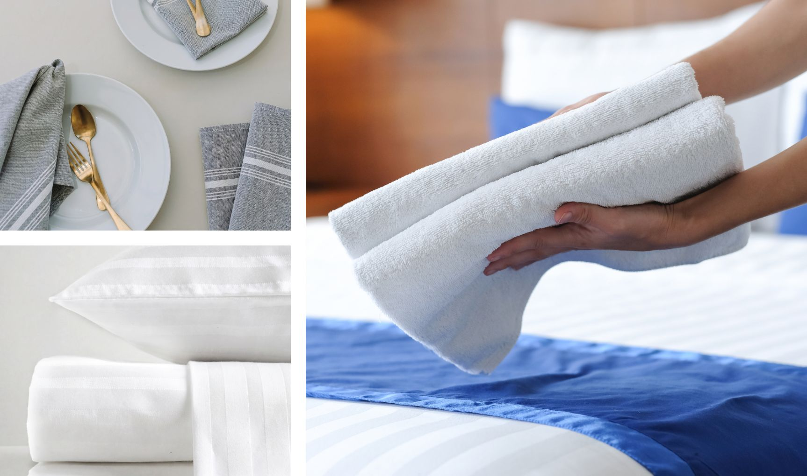
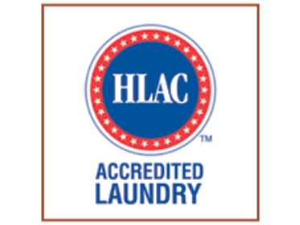
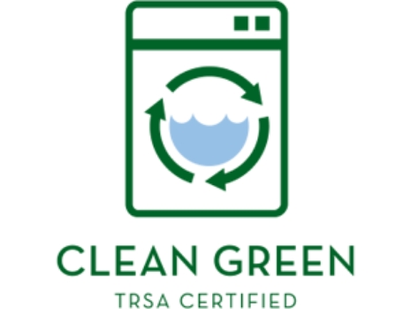
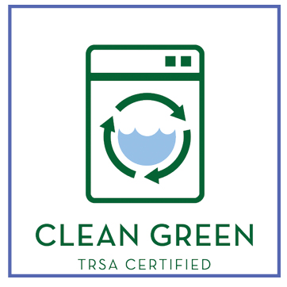
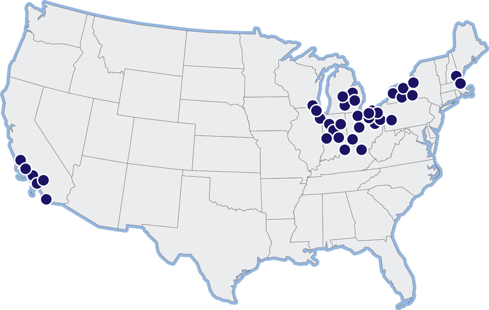

Linens · Laundry · Logistics
Your operation runs better when every detail is taken care of.
Linen. Laundry. Logistics. One dependable partner. From healthcare facilities and hotels to restaurants and large-scale commercial operations, Morgan Services delivers professionally managed linen and uniform programs designed around your business.
Serving businesses since 1887. Built around the demands of modern operations.
02 — Operational scale
Infrastructure built for demanding operations.
Our national network combines industrial processing capacity, logistics infrastructure, and technology to support businesses that cannot afford operational interruptions. The figures below are the ones Morgan publishes today.

38M+ Gallons of water recycled annually
Company-owned facilities and local service teams, coast to coast. Nearly 200 trucks move linen and uniforms from Morgan plants every week.
03 — Industry solutions
Different industries. Different demands. One reliable partner.
Every facility has different requirements. Programs are designed around your products, usage patterns, operational schedules, and service expectations.
Healthcare
Hospital linens, patient apparel, surgical textiles, and professional uniforms.
Hospitality
Hotel linens, towels, restaurant napery, uniforms, and back-of-house textiles.
Food service
Table linens, kitchen textiles, uniforms, and scheduled service for restaurants and catering.
Senior living
Resident linens, towels, and staff apparel with reliable replenishment.
Fitness, spa, and wellness
Fresh towels, uniforms, and floor-care products for high-volume environments.
04 — Core capabilities
More than laundry. A complete service operation.
Morgan manages the elements that keep linen and uniform programs working: processing, inventory, delivery, quality, and a program shaped to the account.
Industrial textile processing
Professional laundering for high-volume commercial and institutional work, in company-owned plants.
Inventory management
Visibility into product usage, availability, replacement, and what is on hand between deliveries.
Distribution and logistics
Delivery and collection built around facility hours. Nearly 200 trucks, and 1.8 million delivery miles a year.
Quality and hygiene
Documented processing, quality control, TRSA Clean Green certification, and HLAC accreditation at most facilities.
Custom service programs
Frequency, product selection, and inventory arrangements designed around the way a customer actually operates.
Reporting and visibility
Counts, tracking, and reporting that help customers see usage, loss, and cost — not a one-size par level.
05 — Program planner
Plan the requirement. Start the enquiry.
Tell Morgan what you run, what you use, and how often you need service. The summary is a structured lead, not a generic contact form.
Concept demonstration. This is not a live pricing system and it does not submit to Morgan’s sales team.
06 — Technology
Visibility that makes operations easier.
Managing linen across facilities takes more than a standing delivery. Morgan invests in inventory visibility, linen counting, tracking, reporting, and logistics so the right product keeps moving.
- Monitor linen and uniform inventory.
- Understand usage and replacement patterns.
- Identify shortages and excess.
- Improve distribution planning.
- Reduce unnecessary product loss.
- On hotel programs, RFID-enabled tracking is part of the published model.


07 — Certifications
Standards you can depend on.
Quality is the process behind the product. Morgan is the first coast-to-coast linen and uniform laundry operation certified by TRSA to the Clean Green standard. Most facilities are accredited by the Healthcare Laundry Accreditation Council, which inspects the full processing cycle.


08 — Facilities and network
National infrastructure. Local service.
Processing, quality control, transportation, and customer support sit in company-owned facilities. The map is Morgan’s. Headquarters is in Chicago.
Chicago headquarters
205 North Michigan Avenue, Suite 4100, Chicago, IL 60601
1-888-9-MORGAN · (312) 346-3181
Midwest and Northeast
Ohio, Indiana, Michigan, Illinois, New York, Pennsylvania, and New England service areas.
California
Los Angeles, Orange County, Palm Springs, Riverside, and San Diego.
Company-owned plants
Shared best practices and standardized processes, with a local branch to call.

09 — Sustainability
Better operations. More responsible resource use.
Morgan publishes a commitment to efficient equipment, water reuse, and environmentally responsible wash chemistry, and points customers toward reusable textiles instead of disposables.
Cloth, as Morgan frames it
On the hospitality pages, Morgan cites how U.S. consumers associate cloth table settings with service, food, appearance, and environmentally friendly practice.
Better service
Better food quality
Better appearance
Environmentally friendly
10 — Customer proof
Trusted by businesses that depend on the delivery.
“The Morgan Mission was in action this past weekend when I urgently requested a linen delivery on Saturday morning after an unexpected surge in business due to the Grammys. With Lavo running out of tablecloths, Morgan Services stepped up and a sales representative delivered them right away.”
“Morgan Services consistently goes above and beyond to deliver outstanding service to our practice. Our new service rep is a joy to work with and always provides exceptional service.”
“Late one afternoon, I called my Morgan Services rep requesting a scrub delivery by 6:00 AM the next day. Even though the Morgan delivery driver had finished his route after the center had closed, he loaded the scrubs and delivered them before 6:00 AM the following morning.”
“I know I say this a lot...but Morgan Services is the BEST! We appreciate all you do for us; we are eternally thankful for your services and the quick turnaround on additional products when given short notice.”
11 — Start
Let’s build a service program around your business.
Whether you manage a healthcare facility, a hospitality group, a restaurant, or a multi-location operation, start with the work itself. Morgan’s team can take the profile from there.